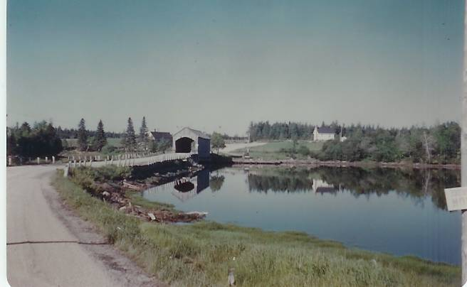
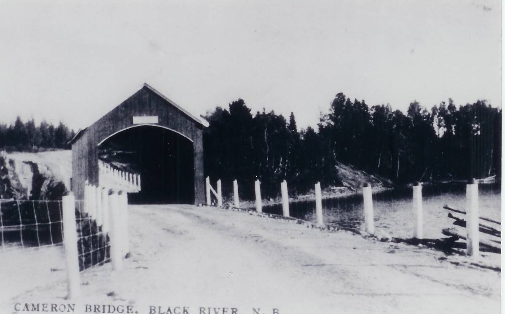
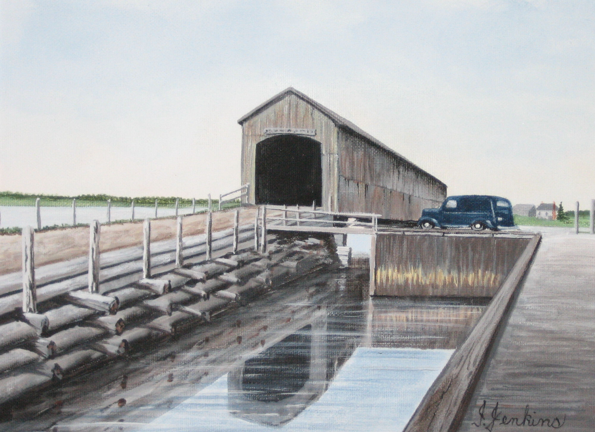

The Family Chronicle
No. 114 March 4, 2006
____________________________________________________________________
Covered Bridges on the Black River

Little Branch Bridge taken from the North side (Glendenning Collection)

Cameron Bridge from south side (
Courtesy of Francis MacNaughton)

Victoria Bridge from East side
(From a painting by Isobel Jenkins, courtesy of Richard MacDougall)
Ed Gardner
Had an enquiry from Ed Gardner and his daughter looking for information on the Dorings. My Aunt, my father’s sister, married Ed’s Uncle, Bob Doring. Turns out we are “kinda” related but not blood relatives. From the information that he provided, it certainly is possible that his father, my father, Uncle Guy Glendenning and Uncle George Watling may have worked on some dam sites together.
He remembers:
During the depression, his father worked 40 hours a week at a plant and then farmed in the evenings and weekends. They milked 20 cows at the time.
Their 6 cylinder, air cooled Franklin Car.
Clamming on the mud flats in Maine
Driving back to Connecticut from Maine when they saw boys hawking extra editions of the newspaper with headlines reading “War! Germany invades Poland”.
Seeing 1.5 pound lobsters selling in 1939 for 25 cents
The Louis-Schmelling fight but, unlike me, he was allowed to listen on radio at the church camp he was attending in Woodstock, Conn.
Their truck did not have headlights, couldn’t afford them, so he donned a white shirt and walked ahead of the truck which his mother drove along the windrows at night so his mother would know where the windrows were while his father was forking on the hay.
The State inspector testing the cows for TB. (Ed. I remember that also; seems to me that the inspector used a very long needle which he pushed into the cow near its tail.)
The one-room school with the outside privy.
Christmas Gift
In my time, telephone service to the Black River area was operated by N.B Telephone Company. On the north side of the Branch and down to Hardwicke, telephone service was provided by a “Government line”. I am not sure of that arrangement but recall that the government service was always out of order.
The Chatham Gazette of December 24, 1930 reported that “free telephone service” is now available on the south side of Black River as far as Elmer Glendenning’s and on the North side to Mrs. MacRae’s. I am not sure that I fully understand exactly what that means.
Follow-up
A note from Art Mills included the following:
“BABBET-now here is something I know about in spite of my non-mechanical mind .My Dear Father did explain the basics of the small gas motors to me and a few things sank in. The small marine motor (Atlantic by name) 10 HP two cylinder which was the Power in the M.H.L. (my Dad’s old boat). This old motor had 4 of these bearings. The pouring of these bearings was a very delicate exercise, and required the expert hands of Cousin Alexander Mills (Son of Andrew of BayDuVin Beach,) These bearings were made of Babbet. The bearings were poured then filed to smooth the surface, it took days...
…By the way among my treasures I found some MRHS patches for the Hockey team- 1950, Softball team- 1949; this would be in Raymond Leger’s years.”
The Family Chronicle (Copyright) is an occasional newsletter published by Don Glendenning and posted on the family website. It is intended to share information about my family, community and the times in which I grew up. While every effort is made to be accurate, errors are likely to occur. Comments, enquiries and information may be sent to 62 Queen Elizabeth Drive, Charlottetown, PEI, C1A 3A9. Tel: 902 892 5859. Email: dglende@auracom.com Web: www.glendenning.net/don